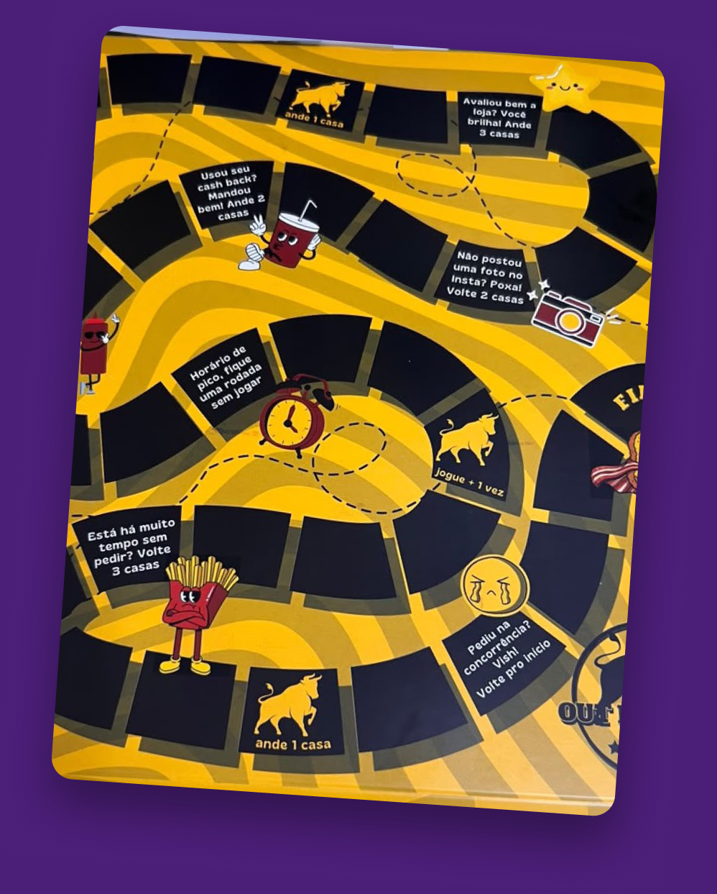
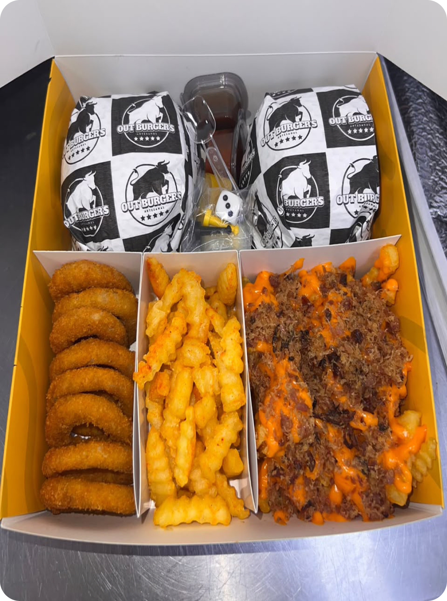
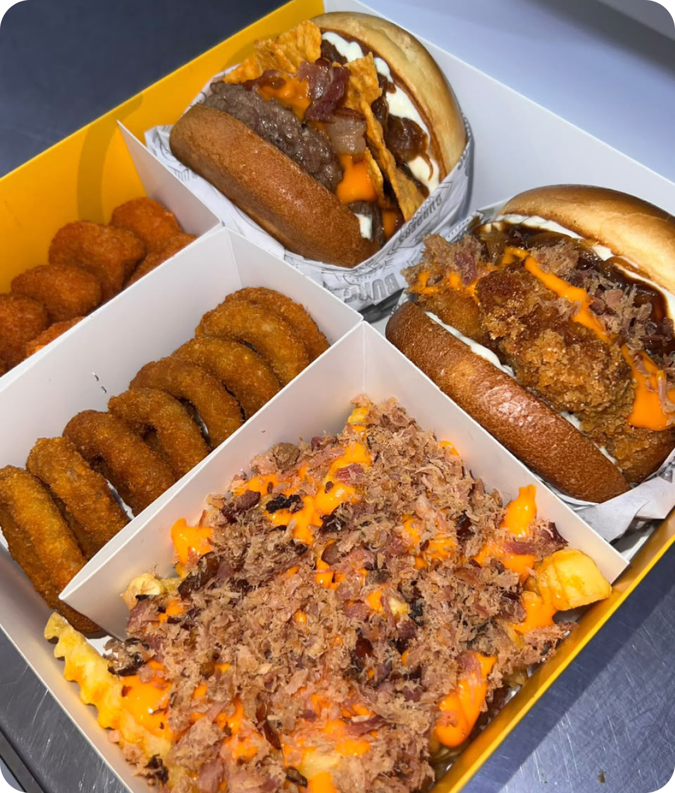
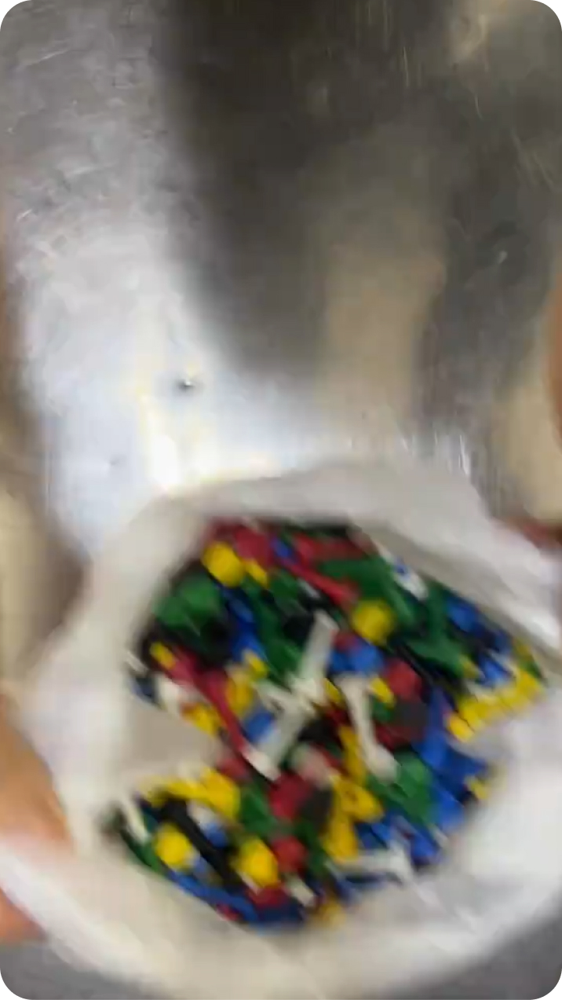
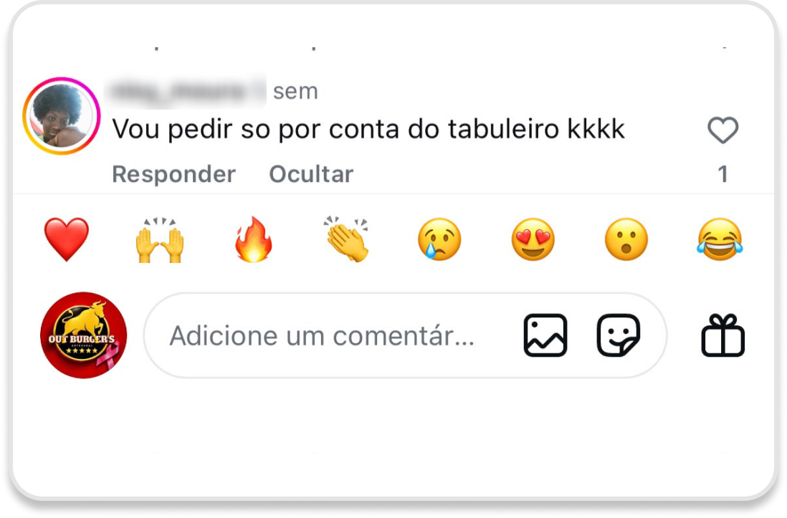
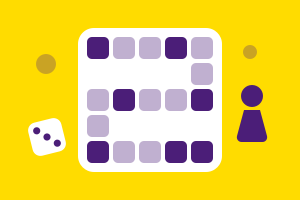
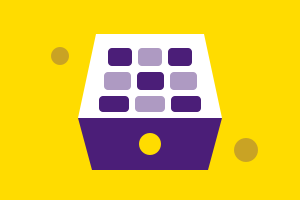
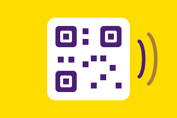
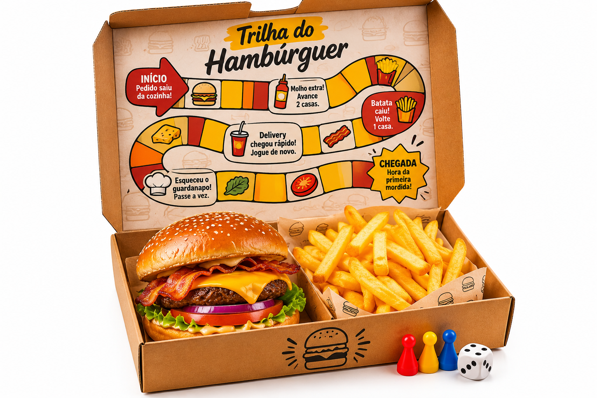

Foto: Divulgação.
Quando a embalagem vira experiência
Por: Bruna Cruz
Ao pedir comida por delivery, a caixa chega junto com o hambúrguer, a pizza ou a sobremesa. Depois que o pedido é aberto e consumido, normalmente ela cumpre seu papel e vai para o lixo. Mas na hamburgueria Out Burgers Artesanal, de Juiz de Fora (MG), a embalagem de alguns combos amplia a experiência do pedido e convida os clientes a brincarem enquanto comem. No lugar da tradicional caixa branca, ou com a logo do restaurante, está um jogo de tabuleiro impresso na tampa. Para completar a diversão, o pedido acompanha um saquinho com dados e peças.
A ideia surgiu quase por acaso. Mariana Zechina, proprietária da hamburgueria, sempre gostou de jogos de tabuleiro e enxergou na possibilidade de personalizar as embalagens uma oportunidade de fazer algo diferente. O estabelecimento já comercializava combos na caixa, mas os pedidos eram enviados em embalagens brancas e sem informações.

Mariana e seu marido decidiram apostar em um jogo de tabuleiro, mas queriam que a criação tivesse a identidade do restaurante e fosse exclusiva. Mariana assumiu o desenvolvimento: criou o desenho, as frases e o layout da brincadeira utilizando um aplicativo de design gráfico.
“Eu queria que fosse um jogo bem personalizado, bem a cara da nossa hamburgueria, que nenhum outro lugar fosse ter. A gente sentou, conversou sobre as frases, criei o desenho do jogo e coloquei as frases intercaladas com as pecinhas.”
Mariana Zechina, proprietária da Out Burgers Artesanal
A caixa como ponto de contato
Quando o cliente pede uma refeição em casa, o restaurante deixa de contar com boa parte dos elementos que compõem a experiência presencial: o ambiente, a decoração, o atendimento e a interação com a equipe. Nesse cenário, a embalagem pode ganhar outra importância e se tornar um dos principais pontos de contato físicos entre a marca e o consumidor.
Mais do que proteger o alimento durante o transporte, a caixa comunica a identidade do negócio e também pode surpreender o cliente e prolongar a experiência depois que o pedido chega. Na Out Burgers, a brincadeira começa justamente quando a embalagem é recebida e continua ao ser aberta e utilizada durante ou após a refeição.

A novidade também foi pensada para não complicar a rotina da equipe. Com as caixas já personalizadas, as peças e o dado ficam separados em pequenos saquinhos, que são colocados dentro da embalagem depois de montada. Segundo Mariana, o processo não exige grandes mudanças na operação nem toma muito tempo da equipe.
Quanto custa transformar a caixa?
A hamburgueria encomenda mil unidades por vez, com reposição a cada quatro ou cinco meses. O cálculo considera o valor da embalagem personalizada, já com o frete incluído. Os componentes do jogo são comprados separadamente pela internet.
A quantidade de peças varia conforme o combo. Na Caixa da Felicidade, que acompanha dois lanches, são enviados dois peões e um dado. Já na Caixa Trio, com três lanches, são três peões.
A conta da caixa
Caixa da Felicidade
2 lanches · 2 peões + 1 dado
R$ 5,20
por caixa
Caixa
Trio
3 lanches · 3 peões + 1 dado
R$ 5,50
por caixa
Fonte: Out Burgers Artesanal.
A produção também conta com um cuidado importante: a hamburgueria trabalha com uma gráfica especializada na fabricação de embalagens para alimentos, responsável por assegurar a adequação dos materiais utilizados.
Da caixa às redes sociais
O jogo foi bem recebido logo nos primeiros pedidos. A hamburgueria recebeu comentários positivos por mensagens, e os entregadores também relataram a surpresa dos clientes ao receberem a embalagem. No primeiro mês de implantação, as vendas dos combos servidos nas caixas personalizadas cresceram 15%. Quase um ano depois, o crescimento já ultrapassava 150%, segundo Mariana, impulsionado principalmente pela repercussão de um vídeo postado por ela nas redes sociais.
Vendas dos combos nas caixas personalizadas
+15%
no primeiro mês
+150%
quase um ano depois
Fonte: Mariana Zechina, Out Burgers Artesanal

A publicação feita pela empreendedora enquanto montava um dos combos alcançou mais de 200 mil visualizações e 10 mil curtidas, levando a experiência da hamburgueria até pessoas de diferentes regiões do país. A repercussão também incentivou a hamburgueria a continuar investindo na proposta. Para a próxima remessa de caixas personalizadas, Mariana planeja apresentar uma nova brincadeira interativa, ainda sem formato definido.

Do pedido à interação
Não é necessário criar um jogo elaborado ou investir em uma embalagem completamente nova para transformar o delivery em uma experiência. O primeiro passo é observar o que já existe e pensar: o que o cliente poderia fazer, descobrir ou compartilhar a partir dessa embalagem?
Algumas possibilidades podem ser adaptadas ao perfil do restaurante e ao cardápio:
-
Quiz
Restaurantes temáticos podem criar perguntas e respostas relacionadas ao universo da marca, com dicas ou curiosidades impressas no interior da embalagem.

Jogos tradicionais
Jogo da memória, trilhas, Ludo e outros passatempos simples podem despertar o interesse de diferentes faixas etárias e aproveitar o apelo nostálgico.
-
Datas comemorativas
Carnaval, Festa Junina, Dia das Mães, Dia dos Pais, Dia dos Namorados e Natal podem inspirar edições especiais e temporárias.

Embalagens multiuso
Caixas maiores, como as de pizza, podem ganhar uma segunda função, como um painel para fotos ou uma superfície para brincadeiras.

QR Code
Um código impresso pode direcionar o cliente a uma playlist de músicas, a um vídeo de preparo dos pratos, a um conteúdo exclusivo ou a um cupom para o próximo pedido.
Antes de personalizar, planeje
Antes de investir em uma embalagem diferente, é importante avaliar os custos e as condições de produção. Gráficas especializadas podem orientar sobre formatos, materiais, impressão e quantidades mínimas de encomenda. Para pequenos negócios, vale comparar fornecedores e solicitar orçamentos para diferentes tiragens.

Outro cuidado indispensável é a segurança. Tintas, materiais e processos de impressão precisam ser adequados à finalidade da embalagem e ao contato com alimentos. Mariana explica que a segurança das embalagens utilizadas pela Out Burgers é assegurada por uma gráfica especializada nesse tipo de produção. Para outros estabelecimentos, a recomendação é confirmar com o fornecedor as especificações técnicas e a adequação dos materiais.
Também é necessário considerar o impacto da personalização na operação: o custo adicional por unidade, o espaço de armazenamento, o tempo de montagem dos pedidos e a margem de lucro. Uma ideia criativa precisa funcionar tanto para o cliente quanto para o negócio.
Antes de lançar, teste
A próxima brincadeira da Out Burgers ainda não tem formato definido. Mariana já sabe, porém, que quer levar um novo jogo para as embalagens. Afinal, quando a caixa deixa de ser apenas o caminho entre a cozinha e a casa do cliente, ela também pode se tornar parte daquilo que faz a experiência ser lembrada.